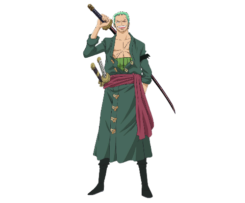
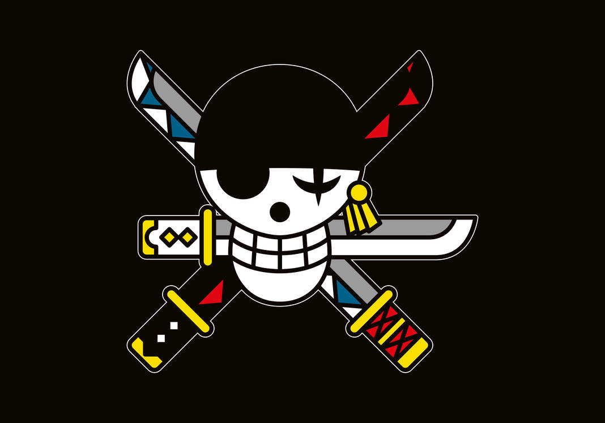

Roronoa Zoro
Caçador de PiratasRoronoa Zoro, também conhecido como "Caçador de Piratas" Zoro, é o combatente dos Piratas do Chapéu de Palha e um ex-caçador de recompensas.
Ele foi o primeiro membro a juntar-se à tripulação.
Sua fama como mestre espadachim e sua grande força, juntamente com as ações de seu capitão, às vezes levaram os outros a acreditar que ele era o verdadeiro capitão da tripulação antes deste obter sua primeira recompensa, enquanto algumas pessoas acreditam que ele seja o imediato.
Ele é um dos quatro melhores lutadores da tripulação, ao lado de Luffy, Sanji e Jinbe, e seu sonho é se tornar o maior espadachim do mundo. Zoro também é considerado como um dos doze piratas que são referidos como "A Pior Geração". Ele atualmente tem uma recompensa de Bsymbol 1.111.000.000.
"Nunca mais... Nunca mais eu vou perder!"
- Local de origem: East Blue
- Residência: Vila Shimotsuki
- Aniversário: 11 de Novembro
- Tipo Sanguíneo: XF
- Primeira aparição: Capítulo 3; Episódio 1
- Estado: Vivo
O corpo de Zoro está coberto de cicatrizes de suas muitas batalhas, mais notavelmente a enorme cicatriz que se estende do ombro esquerdo até o quadril direito, adquirida durante a derrota contra o maior espadachim do mundo, Dracule Mihawk, no Baratie.
Após o timeskip, ele ganhou outra cicatriz sobre o olho esquerdo, obtido através de meios desconhecidos.